On the pitch two batsmen are batting and one is bowling. The bowler's aim is to get the batsmen out in one of six different ways :
Bowled : When the bowler bowls and the batsmen misses the ball which results in hitting the stumps or bail.
Hit Wicket : If the batsman indirectly hits the stumps or if any gear of the batsman fails down and hits stumps is also out.
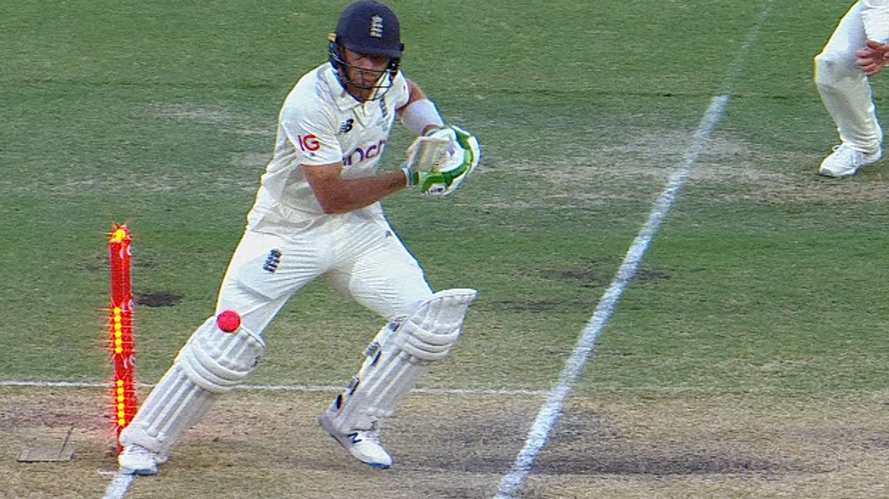Caught : The batsman hits the bowl in the air and a fielder catches it, without making any contact with the ground.
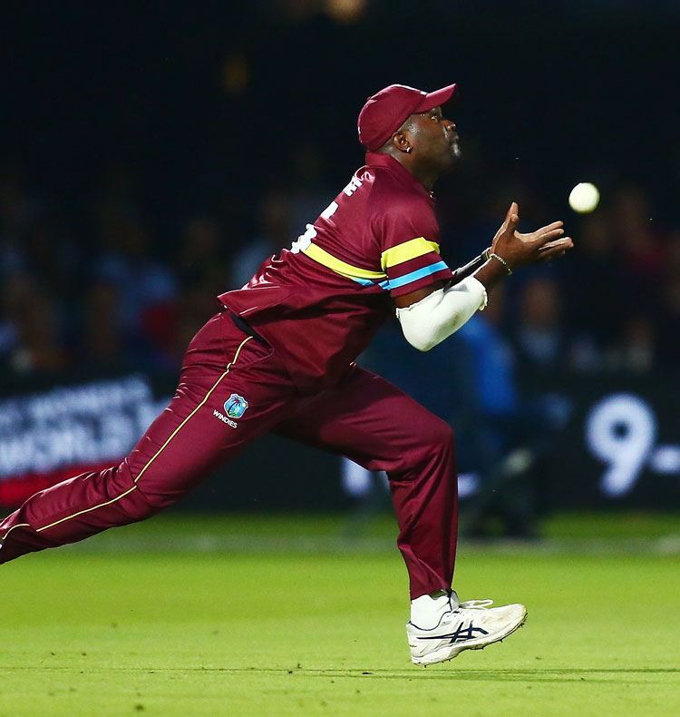Run Out : If both attempt to run but one of the fielding team members hits the stumps before the batsman reaches the crease.
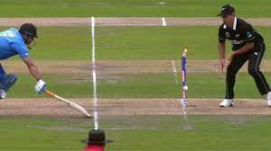Stumped : If the batsman is out of their crease and does not connect the bowl with the batsmen the wicket keeper can hit the stumps.

LBW : If the batter's leg or body intercepts the ball before it hits the stumps, the batsman is out.
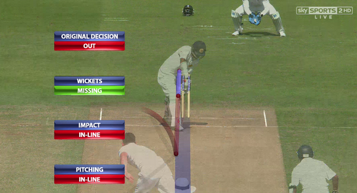An “over” in cricket is a set of 6 deliveries. A bowler tries to get the batsmen out or limit his or her runs, by throwing the cricket ball over 22 yards during an over. Throughout the innings, bowlers alternate throughout the opposite end of the pitch once six deliveries are finished.
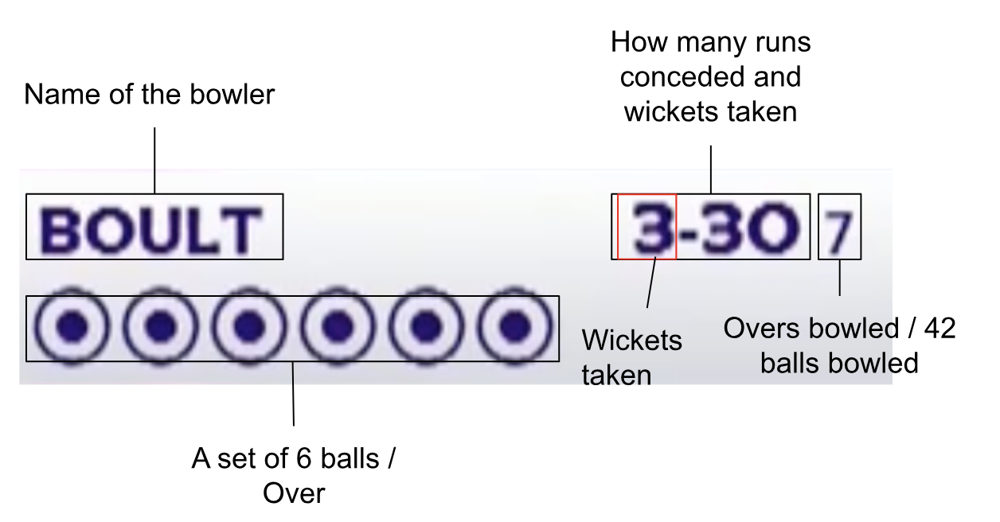Umpires are extremely important in cricket. They are in charge of guaranteeing fair play and making critical decisions throughout the game. Umpires administer the rules, dismissal decisions, and keep the game moving smoothly. They must be capable, objective, and have a thorough understanding of the game. Umpiring might be difficult, but it is an important element of the game.
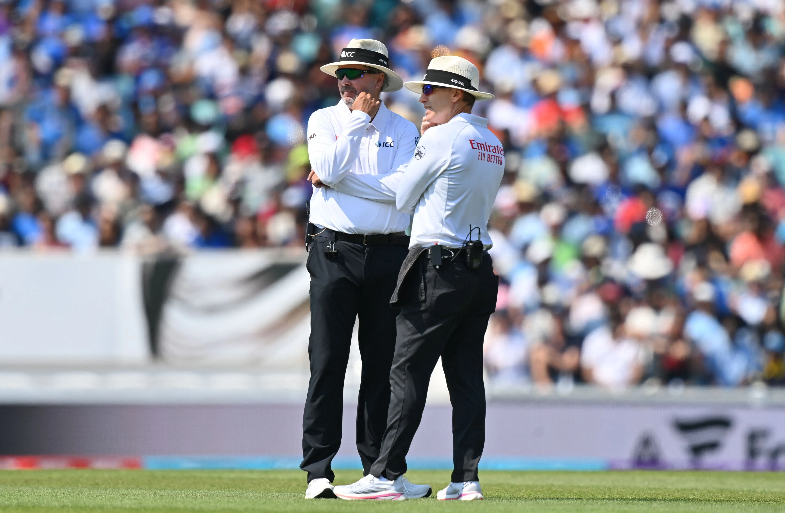In a cricket match there are 3 umpires. One is positioned behind the stumps at the bowler’s end. This umpire makes decisions on LBW appeals and no ball calls. One is perpendicular(square leg umpire) to the batsmen on strike to identify runs out and stumping. The third one is behind a technology to identify things like replays, to help make decisions on run-outs, catches, and no balls(this will be explained later).
The third umpire comes in handy when one of the team uses a review. There are a maximum of 1 review in T20, 2 reviews in ODI, and 3 reviews in Test matches. A review occurs when a side challenges an umpire's decision, this is called Decision Review System (DRS). A review can be requested by the team captain or the batsman/bowler. If the team that reviewed the umpire’s decision turned out to be correct then the team would get the wicket and would not lose any review.
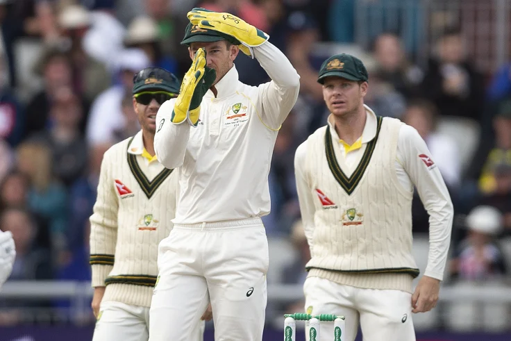A bowler's illegal delivery is called a "no ball". It can occur for a number of reasons, including bowling illegally, stepping over the crease, or hitting the ball higher than waist height. The batting team is given an extra run when a no ball is declared, and the next delivery is called a “free hit”. Batsmens cannot get out by that delivery unless it’s a run out.
Another illegal delivery a bowler can bowl is called a wide. The umpires can give a wide when the bowl is either on leg side or off side depending on the batsmen if he or she is a right or a left handed. If it is not within the batsmen's reach the umpire has the right to signal a wide. The batting team receives an extra run and the bowler would have to re-bowl the bowl.
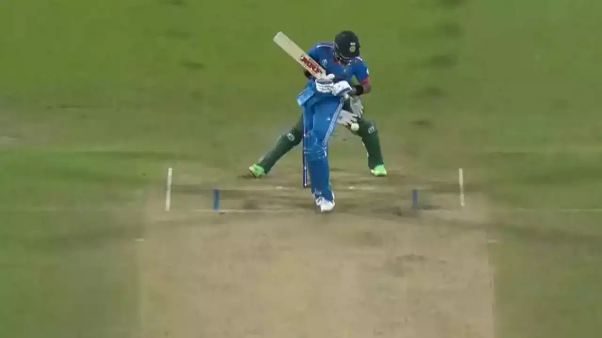Test cricket is the longest format of cricket, it consists of 5 days depending on how good the two teams perform. 1 day is equal to 90 over (540 balls). In test matches each team has two innings of batting and 2 innings of bowling. The batting team has to make as many runs as possible, and the bowler's job is to get them all out by dismissing the batsmen. Once the bowling teams get the batsmen all out or declare(the batting team is confident with the score) they have to bat. Both sides bat and bowl twice in the same order during an innings, giving them a chance to build on a successful outing or bounce back from a bad one. At the conclusion of the game, the side with the most runs scored during both innings wins. Unless one team forfeits or admits defeat, the game concludes in a tie if there is not enough time to finish the match or if there is still no winner after five days.
ODI stands for One Day International. This consists of 50 overs (300 balls), and the objective is to get more runs than the opposition. In ODI teams tend to score runs during the first 10 overs to get the moment or towards the end of the innings, the batting team may take more risks and go for big hits in order to boost their score.

T20I, also known as Twenty20 cricket, is a shortest and thrilling format of the game. It was introduced by the England Cricket Board or the ECB in 2003 to promote their domestic cricket(Validity Blast), played in England and Wales. This short format brings out creative shot selections, brave batting and tactical bowling. T20 brings a wider audience, as the audience witnesses creative batting and brings another level of excitement. T20 consists of 20 overs or 120 bowls. Each team gets back 120 bowls trying to get the runs quick.
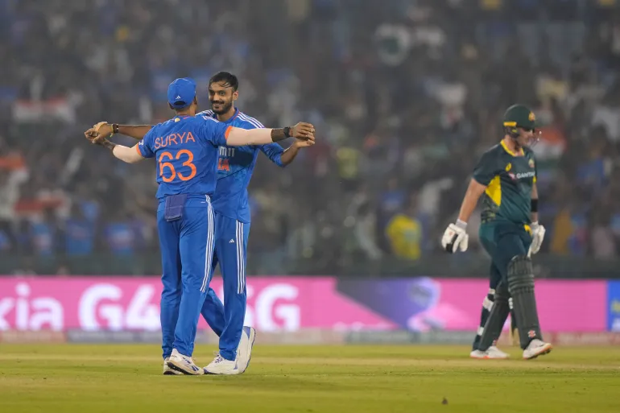Cricketers are not directly selected, but they are being observed by the national board. They must consistently perform well at the domestic level. They have a better chance to get selected for the national level if they show their talent and provide impressive performances. Many good cricketers have started their international journey playing the under 19 world cups, which is held every 2 years.
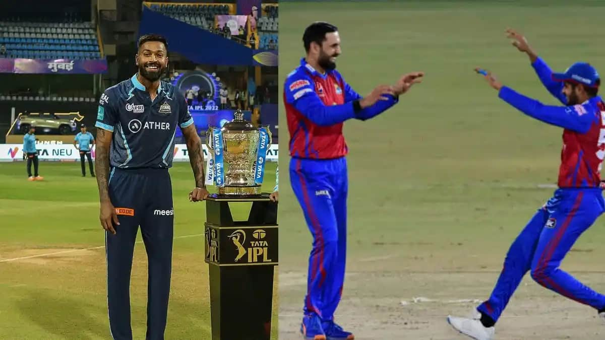Hence why, there are many domestic leagues in this generation and local players can showcase their talent and skills to attract the fans and the board. These leagues are provided by the cricket boards of the country. Some popular domestic leagues, Indian Premier League(IPL), the Big Bash League(BBL) in Australia, The Hundred in England and Caribbean Premier League (CPL) in the West Indies.
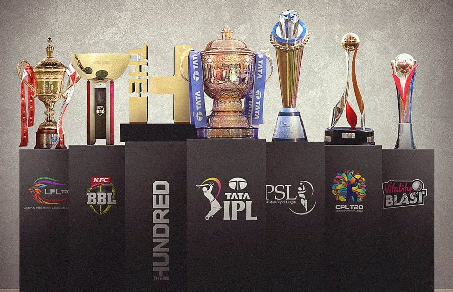